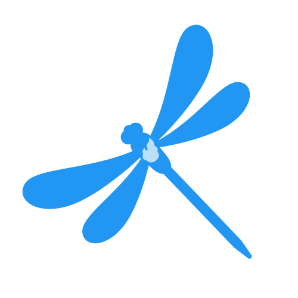

ifXBuiltY ★ 1
A playful image generator for the thought experiment “what if X built Y?” — blend one product’s visual language with another’s shape into shareable fake screenshots.

Hi, I'm
unserious developer, serious tinkerer.
if X built Y — mashup generator at xbuildsy.com.
Recent projects ↓A few small things I’ve made. The toys are just quick demos.
A playful image generator for the thought experiment “what if X built Y?” — blend one product’s visual language with another’s shape into shareable fake screenshots.
I have a fascination with Windows Phone, and I work on these projects in my free time.
Windows Phone–style Pivot tab bar and WP8.1 UI primitives for Flutter — typography, motion, and controls measured from the real OS.
Android launcher scaffold with a WP8.1 Start screen — tiles, app list, and alphabet jump built on wp_pivot_flutter.
Python WinUSB client for mirroring and recording a Windows Phone 8.1 screen over USB — a modern take on Microsoft’s projection stack.
set up windows phone development env, screen record the ui from emulator, extract sizing and curve info, implement it in flutter
— Chinmay କବି 🇮🇳💙 (@ChinuKabi) August 28, 2026
make no mistakes
pic.twitter.com/YVEhRhwLbD
the route change animations are taking good shape
— Chinmay କବି 🇮🇳💙 (@ChinuKabi) August 29, 2026
pic.twitter.com/xSYIKxWNCI
Dart package that prunes unused translations from .arb files.
used by 
String manipulation library for Dart and Flutter, on steroids.
Menu-bar app that lays a screensaver overlay over the MacBook display.
These are my posts from dev.to, from 2020 to 2022.